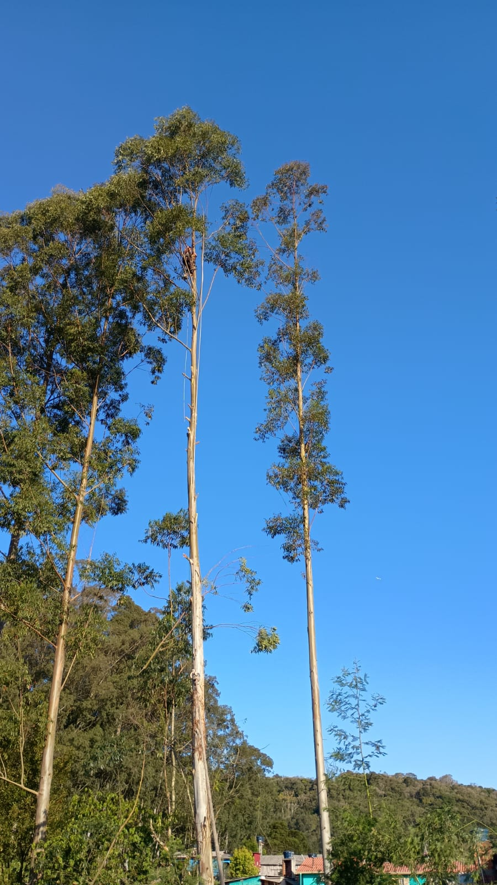
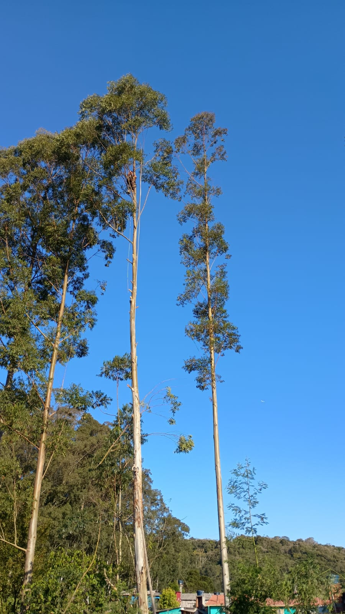

Liderada pelo CEO Alex Junior Gonçalves dos Santos, a Ecopodas é especializada em serviços de poda e manejo de árvores de grande porte e alto risco. Atuamos com responsabilidade, segurança e total respeito ao meio ambiente, sempre prezando pela saúde das árvores e pela segurança das pessoas e patrimônios ao redor. Nosso trabalho vai além da manutenção paisagística — buscamos o equilíbrio entre a preservação da natureza e principalmente a proteção de vidas e bens. Cada serviço é executado com técnica, planejamento e comprometimento, contribuindo para o fortalecimento das árvores e a redução de riscos em áreas urbanas ou rurais.
Realizamos podas técnicas com objetivo de fortalecer a árvore, melhorar sua estrutura e garantir a segurança de áreas residenciais, urbanas e industriais. Trabalhamos com diferentes tipos de poda: limpeza, formação, elevação de copa e controle de crescimento.
Atuamos na avaliação e intervenção segura em árvores que oferecem risco à vida, à propriedade ou à rede elétrica. Utilizamos técnicas modernas e equipamentos adequados para garantir a remoção ou tratamento com total controle e segurança.
Remoção completa de tocos e raízes que possam causar danos a calçadas, construções ou dificultar novos plantios.
 
